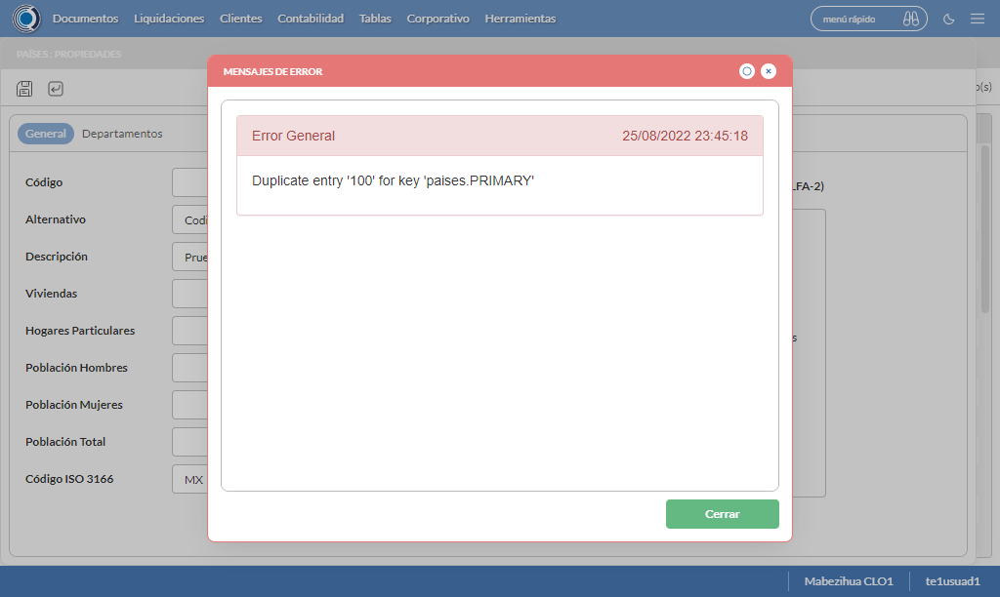

Desarrollado por : Area de Testing PWST
Fecha y hora de inicio : 2022-08-25 18:40:38
Duracion : 0:10:50.811651
Resultado : Total 8，Correctos 8 ，Taza de resultado 100.00%
Resumen 100.00% Errores 0 Fallidos 0 Correctos 8 Test realizados 8
| Caso de Prueba | Total | Correctos | Fallido | Error | Detalles | Captura del error |
| UbicacionesGeograficas.Test: Escenario 1 de Ubicaciones Geograficas | 8 | 8 | 0 | 0 | Detalles | |
test |
pt1_1: 2022-08-25 18:40:39,944 - root - INFO - Se abre el chrome
2022-08-25 18:40:41,093 - root - INFO - Entra a la URL
2022-08-25 18:40:41,218 - root - INFO - Maximiza la pantalla
2022-08-25 18:40:44,270 - root - INFO - Cambia al frame
|
|
||||
test_000: Ingresa a la base de datos |
pt1_2: 2022-08-25 18:40:47,351 - root - INFO - Escribe el usuario
2022-08-25 18:40:47,454 - root - INFO - Escribe la contraseña
2022-08-25 18:40:47,589 - root - INFO - Se dio clic en el boton ingresar
2022-08-25 18:40:48,833 - root - INFO - Ejecutar Enterprise
2022-08-25 18:40:48,834 - root - INFO - Captura: C:\xampp\htdocs\versiones\automatizaciones\AutoPWST\01UG\report\img screen：20220825_18_40_48.png
2022-08-25 18:40:53,072 - root - INFO - Cambia entre pestañas
|

|
||||
test_001: Abre menu y ejecuta pantalla |
pt1_3: 2022-08-25 18:40:58,223 - root - INFO - Abre el menu completo
2022-08-25 18:41:14,172 - root - INFO - Abre la pantalla de Paises
2022-08-25 18:41:14,239 - root - INFO - La pantalla ejecutada es Paises.
2022-08-25 18:41:14,239 - root - INFO - Captura: C:\xampp\htdocs\versiones\automatizaciones\AutoPWST\01UG\report\img screen：20220825_18_41_14.png
2022-08-25 18:41:14,408 - root - INFO - Se presiona el boton 'Nuevo', para crear un nuevo registro.
|

|
||||
test_002: Abre la ventana de nuevo y crear un registro |
pt1_4: 2022-08-25 18:41:17,484 - root - INFO - Se abrio la pantalla para el ingreso de un registro nuevo.
2022-08-25 18:41:17,523 - root - INFO - El campo 'Codigo' si se encuentra visible.
2022-08-25 18:41:17,562 - root - INFO - El campo 'Alternativo' si se encuentra visible.
2022-08-25 18:41:17,600 - root - INFO - El campo 'Descrición' si se encuentra visible.
2022-08-25 18:41:17,640 - root - INFO - El campo 'Viviendas' si se encuentra visible.
2022-08-25 18:41:17,680 - root - INFO - El campo 'Hogares Particulares' si se encuentra visible.
2022-08-25 18:41:17,718 - root - INFO - El campo 'Población Hombres' si se encuentra visible.
2022-08-25 18:41:17,756 - root - INFO - El campo 'Población Mujeres' si se encuentra visible.
2022-08-25 18:41:17,796 - root - INFO - El campo 'Población Total' si se encuentra visible.
2022-08-25 18:41:17,842 - root - INFO - El campo 'Código ISO 3166' si se encuentra visible.
2022-08-25 18:41:17,921 - root - INFO - Ingresa el codigo del nuevo registro
2022-08-25 18:41:21,061 - root - INFO - Ingresa el codigo alternativo del nuevo registro
2022-08-25 18:41:24,237 - root - INFO - Ingresa la descripción del nuevo registro
2022-08-25 18:41:27,383 - root - INFO - Ingresa el número de viviendas del nuevo registro
2022-08-25 18:41:30,522 - root - INFO - Ingresa el número de hogares particulares del nuevo registro
2022-08-25 18:41:33,678 - root - INFO - Ingresa el número de Población de hombres del nuevo registro
2022-08-25 18:41:36,799 - root - INFO - Ingresa el número de Población de mujeres del nuevo registro
2022-08-25 18:41:39,934 - root - INFO - Ingresa el número de Población Total del nuevo registro
2022-08-25 18:41:43,051 - root - INFO - Ingresa el Codigo ISO del nuevo registro
2022-08-25 18:41:48,064 - root - INFO - Captura: C:\xampp\htdocs\versiones\automatizaciones\AutoPWST\01UG\report\img screen：20220825_18_41_48.png
2022-08-25 18:41:58,436 - root - INFO - Se hace el cambio de pestaña para continuar con el registro nuevo
2022-08-25 18:41:58,547 - root - INFO - Se presiona el boton 'Nuevo', para crear un nuevo registro.
2022-08-25 18:41:59,680 - root - INFO - El campo 'Codigo' si se encuentra visible.
2022-08-25 18:41:59,718 - root - INFO - El campo 'Alternativo' si se encuentra visible.
2022-08-25 18:41:59,757 - root - INFO - El campo 'Descrición' si se encuentra visible.
2022-08-25 18:41:59,797 - root - INFO - El campo 'Impuesto' si se encuentra visible.
2022-08-25 18:41:59,835 - root - INFO - El campo 'Viviendas' si se encuentra visible.
2022-08-25 18:41:59,873 - root - INFO - El campo 'Hogares Particulares' si se encuentra visible.
2022-08-25 18:41:59,912 - root - INFO - El campo 'Población Hombres' si se encuentra visible.
2022-08-25 18:41:59,950 - root - INFO - El campo 'Población Mujeres' si se encuentra visible.
2022-08-25 18:41:59,988 - root - INFO - El campo 'Población Total' si se encuentra visible.
2022-08-25 18:42:00,081 - root - INFO - Ingresa el codigo del nuevo registro
2022-08-25 18:42:03,219 - root - INFO - Ingresa el codigo alternativo del nuevo registro
2022-08-25 18:42:06,363 - root - INFO - Ingresa la descripción del nuevo registro
2022-08-25 18:42:21,997 - root - INFO - Ingresa el número de viviendas del nuevo registro
2022-08-25 18:42:25,118 - root - INFO - Ingresa el número de hogares particulares del nuevo registro
2022-08-25 18:42:28,229 - root - INFO - Ingresa el número de Población de hombres del nuevo registro
2022-08-25 18:42:31,366 - root - INFO - Ingresa el número de Población de mujeres del nuevo registro
2022-08-25 18:42:34,485 - root - INFO - Ingresa el número de Población Total del nuevo registro
2022-08-25 18:42:37,645 - root - INFO - Se hace el cambio de pestaña para continuar con el registro nuevo
2022-08-25 18:42:40,763 - root - INFO - Se presiona el boton 'Nuevo', para crear un nuevo registro.
2022-08-25 18:42:41,389 - root - INFO - El campo 'Localidad' si se encuentra visible.
2022-08-25 18:42:41,431 - root - INFO - El campo 'Alternativo' si se encuentra visible.
2022-08-25 18:42:41,473 - root - INFO - El campo 'Descrición' si se encuentra visible.
2022-08-25 18:42:41,512 - root - INFO - El campo 'Viviendas' si se encuentra visible.
2022-08-25 18:42:41,550 - root - INFO - El campo 'Hogares Particulares' si se encuentra visible.
2022-08-25 18:42:41,588 - root - INFO - El campo 'Población Hombres' si se encuentra visible.
2022-08-25 18:42:41,626 - root - INFO - El campo 'Población Mujeres' si se encuentra visible.
2022-08-25 18:42:41,664 - root - INFO - El campo 'Población Total' si se encuentra visible.
2022-08-25 18:42:41,762 - root - INFO - Ingresa el codigo del nuevo registro
2022-08-25 18:42:44,915 - root - INFO - Ingresa el codigo alternativo del nuevo registro
2022-08-25 18:42:48,056 - root - INFO - Ingresa la descripción del nuevo registro
2022-08-25 18:42:51,175 - root - INFO - Ingresa el número de viviendas del nuevo registro
2022-08-25 18:42:54,354 - root - INFO - Ingresa el número de hogares particulares del nuevo registro
2022-08-25 18:42:57,542 - root - INFO - Ingresa el número de Población de hombres del nuevo registro
2022-08-25 18:43:00,666 - root - INFO - Ingresa el número de Población de mujeres del nuevo registro
2022-08-25 18:43:03,806 - root - INFO - Ingresa el número de Población Total del nuevo registro
2022-08-25 18:43:06,943 - root - INFO - Se hace el cambio de pestaña para continuar con el registro nuevo
2022-08-25 18:43:10,082 - root - INFO - Se presiona el boton 'Nuevo', para crear un nuevo registro.
2022-08-25 18:43:10,685 - root - INFO - El campo 'Código' si se encuentra visible.
2022-08-25 18:43:10,724 - root - INFO - El campo 'Alternativo' si se encuentra visible.
2022-08-25 18:43:10,763 - root - INFO - El campo 'Descrición' si se encuentra visible.
2022-08-25 18:43:10,803 - root - INFO - El campo 'Viviendas' si se encuentra visible.
2022-08-25 18:43:10,840 - root - INFO - El campo 'Hogares Particulares' si se encuentra visible.
2022-08-25 18:43:10,878 - root - INFO - El campo 'Población Hombres' si se encuentra visible.
2022-08-25 18:43:10,933 - root - INFO - El campo 'Población Mujeres' si se encuentra visible.
2022-08-25 18:43:10,972 - root - INFO - El campo 'Población Total' si se encuentra visible.
2022-08-25 18:43:11,081 - root - INFO - Ingresa el codigo del nuevo registro
2022-08-25 18:43:14,254 - root - INFO - Ingresa el codigo alternativo del nuevo registro
2022-08-25 18:43:17,399 - root - INFO - Ingresa la descripción del nuevo registro
2022-08-25 18:43:20,532 - root - INFO - Ingresa el número de viviendas del nuevo registro
2022-08-25 18:43:23,664 - root - INFO - Ingresa el número de hogares particulares del nuevo registro
2022-08-25 18:43:26,797 - root - INFO - Ingresa el número de Población de hombres del nuevo registro
2022-08-25 18:43:29,935 - root - INFO - Ingresa el número de Población de mujeres del nuevo registro
2022-08-25 18:43:33,054 - root - INFO - Ingresa el número de Población Total del nuevo registro
2022-08-25 18:43:36,202 - root - INFO - Se da clic en el boton Guardar; se debe crear un nuevo registro.
2022-08-25 18:43:39,329 - root - INFO - Se da clic en el boton Guardar; se debe crear un nuevo registro.
2022-08-25 18:43:42,452 - root - INFO - Se hace el cambio de pestaña para continuar con el registro nuevo
2022-08-25 18:43:45,596 - root - INFO - Se presiona el boton 'Nuevo', para crear un nuevo registro.
2022-08-25 18:43:46,204 - root - INFO - El campo 'Artículo' si se encuentra visible.
2022-08-25 18:43:46,244 - root - INFO - El campo 'Impuesto' si se encuentra visible.
2022-08-25 18:44:21,337 - root - INFO - Se da clic en el boton Guardar; se debe crear un nuevo registro.
2022-08-25 18:44:24,452 - root - INFO - Se da clic en el boton Guardar; se debe crear un nuevo registro.
2022-08-25 18:44:27,608 - root - INFO - Se da clic en el boton Guardar; se debe crear un nuevo registro.
|

|
||||
test_003: Repetir el registro creado anteriormente |
pt1_5: 2022-08-25 18:44:30,720 - root - INFO - Se presiona el boton 'Refrescar', para crear un nuevo registro igual al anterior.
2022-08-25 18:44:40,881 - root - INFO - Se presiona el boton 'Nuevo', para crear un nuevo registro igual al anterior.
2022-08-25 18:44:45,949 - root - INFO - Se abrio la pantalla para el ingreso de un registro nuevo.
2022-08-25 18:44:45,987 - root - INFO - El campo 'Codigo' si se encuentra visible.
2022-08-25 18:44:46,026 - root - INFO - El campo 'Alternativo' si se encuentra visible.
2022-08-25 18:44:46,067 - root - INFO - El campo 'Descrición' si se encuentra visible.
2022-08-25 18:44:46,106 - root - INFO - El campo 'Viviendas' si se encuentra visible.
2022-08-25 18:44:46,143 - root - INFO - El campo 'Hogares Particulares' si se encuentra visible.
2022-08-25 18:44:46,183 - root - INFO - El campo 'Población Hombres' si se encuentra visible.
2022-08-25 18:44:46,221 - root - INFO - El campo 'Población Mujeres' si se encuentra visible.
2022-08-25 18:44:46,265 - root - INFO - El campo 'Población Total' si se encuentra visible.
2022-08-25 18:44:46,305 - root - INFO - El campo 'Código ISO 3166' si se encuentra visible.
2022-08-25 18:44:46,393 - root - INFO - Ingresa el codigo del nuevo registro
2022-08-25 18:44:49,545 - root - INFO - Ingresa el codigo alternativo del nuevo registro
2022-08-25 18:44:52,692 - root - INFO - Ingresa la descripción del nuevo registro
2022-08-25 18:44:55,813 - root - INFO - Ingresa el número de viviendas del nuevo registro
2022-08-25 18:44:58,946 - root - INFO - Ingresa el número de hogares particulares del nuevo registro
2022-08-25 18:45:02,071 - root - INFO - Ingresa el número de Población de hombres del nuevo registro
2022-08-25 18:45:05,176 - root - INFO - Ingresa el número de Población de mujeres del nuevo registro
2022-08-25 18:45:08,301 - root - INFO - Ingresa el número de Población Total del nuevo registro
2022-08-25 18:45:11,425 - root - INFO - Ingresa el Codigo ISO del nuevo registro
2022-08-25 18:45:17,678 - root - INFO - Se da clic en el boton Guardar; se debe crear un nuevo registro.
2022-08-25 18:45:20,687 - root - INFO - Captura: C:\xampp\htdocs\versiones\automatizaciones\AutoPWST\01UG\report\img screen：20220825_18_45_20.png
2022-08-25 18:45:20,904 - root - INFO - Se presiona el boton 'Cerrar', para cerrar el mensaje de duplicidad de llave primaria
2022-08-25 18:45:23,023 - root - INFO - Se presiona el boton 'Cerrar', para cerrar la ventana
|
 | ||||
test_004: Modificar el registro |
pt1_6: 2022-08-25 18:45:27,102 - root - INFO - Se presiona el boton 'Refrescar', para crear un nuevo registro igual al anterior.
2022-08-25 18:45:43,393 - root - INFO - Se presiona el boton 'Codigo', para buscar un nuevo registro y poder modificarlo.
2022-08-25 18:45:48,079 - root - INFO - Se da clic en el registro creado, para proceder a modificarlo.
2022-08-25 18:45:48,264 - root - INFO - Ingresa el codigo alternativo del nuevo registro
2022-08-25 18:45:51,434 - root - INFO - Ingresa la descripción del nuevo registro
2022-08-25 18:45:54,591 - root - INFO - Ingresa el número de viviendas del nuevo registro
2022-08-25 18:45:57,736 - root - INFO - Ingresa el número de hogares particulares del nuevo registro
2022-08-25 18:46:00,868 - root - INFO - Ingresa el número de Población de hombres del nuevo registro
2022-08-25 18:46:04,079 - root - INFO - Ingresa el número de Población de mujeres del nuevo registro
2022-08-25 18:46:07,240 - root - INFO - Ingresa el número de Población Total del nuevo registro
2022-08-25 18:46:10,410 - root - INFO - Ingresa el Codigo ISO del nuevo registro
2022-08-25 18:46:13,426 - root - INFO - Captura: C:\xampp\htdocs\versiones\automatizaciones\AutoPWST\01UG\report\img screen：20220825_18_46_13.png
2022-08-25 18:46:23,754 - root - INFO - Se hace el cambio de pestaña para continuar con el registro nuevo
2022-08-25 18:46:28,405 - root - INFO - Se da clic en el registro creado, para proceder a modificarlo.
2022-08-25 18:46:28,577 - root - INFO - Ingresa el codigo alternativo del nuevo registro
2022-08-25 18:46:31,773 - root - INFO - Ingresa la descripción del nuevo registro
2022-08-25 18:46:47,426 - root - INFO - Ingresa el número de viviendas del nuevo registro
2022-08-25 18:46:50,627 - root - INFO - Ingresa el número de hogares particulares del nuevo registro
2022-08-25 18:46:53,809 - root - INFO - Ingresa el número de Población de hombres del nuevo registro
2022-08-25 18:46:56,951 - root - INFO - Ingresa el número de Población de mujeres del nuevo registro
2022-08-25 18:47:00,115 - root - INFO - Ingresa el número de Población Total del nuevo registro
2022-08-25 18:47:03,239 - root - INFO - Se hace el cambio de pestaña para continuar con el registro nuevo
2022-08-25 18:47:10,901 - root - INFO - Se da clic en el registro creado, para proceder a modificarlo.
2022-08-25 18:47:11,091 - root - INFO - Ingresa el codigo alternativo del nuevo registro
2022-08-25 18:47:14,290 - root - INFO - Ingresa la descripción del nuevo registro
2022-08-25 18:47:17,461 - root - INFO - Ingresa el número de viviendas del nuevo registro
2022-08-25 18:47:20,621 - root - INFO - Ingresa el número de hogares particulares del nuevo registro
2022-08-25 18:47:23,783 - root - INFO - Ingresa el número de Población de hombres del nuevo registro
2022-08-25 18:47:26,938 - root - INFO - Ingresa el número de Población de mujeres del nuevo registro
2022-08-25 18:47:30,097 - root - INFO - Ingresa el número de Población Total del nuevo registro
2022-08-25 18:47:33,226 - root - INFO - Se hace el cambio de pestaña para continuar con el registro nuevo
2022-08-25 18:47:40,890 - root - INFO - Se da clic en el registro creado, para proceder a modificarlo.
2022-08-25 18:47:41,107 - root - INFO - Ingresa el codigo alternativo del nuevo registro
2022-08-25 18:47:44,285 - root - INFO - Ingresa la descripción del nuevo registro
2022-08-25 18:47:47,447 - root - INFO - Ingresa el número de viviendas del nuevo registro
2022-08-25 18:47:50,598 - root - INFO - Ingresa el número de hogares particulares del nuevo registro
2022-08-25 18:47:53,767 - root - INFO - Ingresa el número de Población de hombres del nuevo registro
2022-08-25 18:47:56,926 - root - INFO - Ingresa el número de Población de mujeres del nuevo registro
2022-08-25 18:48:00,096 - root - INFO - Ingresa el número de Población Total del nuevo registro
2022-08-25 18:48:03,241 - root - INFO - Se da clic en el boton Guardar; se debe crear un nuevo registro.
2022-08-25 18:48:06,360 - root - INFO - Se da clic en el boton Guardar; se debe crear un nuevo registro.
2022-08-25 18:48:11,503 - root - INFO - Se hace el cambio de pestaña para continuar con el registro nuevo
2022-08-25 18:48:19,159 - root - INFO - Se da clic en el registro creado, para proceder a modificarlo.
2022-08-25 18:48:54,324 - root - INFO - Se da clic en el boton Guardar; se debe crear un nuevo registro.
2022-08-25 18:48:57,445 - root - INFO - Se da clic en el boton Guardar; se debe crear un nuevo registro.
2022-08-25 18:49:00,569 - root - INFO - Se da clic en el boton Guardar; se debe modificar la informacion del registro.
|
|||||
test_005: Eliminar el registro creado |
pt1_7: 2022-08-25 18:49:03,706 - root - INFO - Se presiona el boton 'Refrescar', para proceder a eliminar el registro.
2022-08-25 18:49:21,317 - root - INFO - Se da clic en el registro creado, para proceder a eliminarlo.
2022-08-25 18:49:27,450 - root - INFO - Se hace el cambio de pestaña para continuar con el registro nuevo
2022-08-25 18:49:32,117 - root - INFO - Se da clic en el registro creado, para proceder a modificarlo.
2022-08-25 18:49:32,241 - root - INFO - Se hace el cambio de pestaña para continuar con el registro nuevo
2022-08-25 18:49:39,907 - root - INFO - Se da clic en el registro creado, para proceder a modificarlo.
2022-08-25 18:49:40,026 - root - INFO - Se hace el cambio de pestaña para continuar con el registro nuevo
2022-08-25 18:49:47,679 - root - INFO - Se da clic en el registro creado, para proceder a modificarlo.
2022-08-25 18:49:47,803 - root - INFO - Se presiona el boton 'Eliminar', para eliminar el registro.
2022-08-25 18:49:50,975 - root - INFO - Se da clic en el boton Guardar; se debe crear un nuevo registro.
2022-08-25 18:49:56,136 - root - INFO - Se da clic en el boton Guardar; se debe crear un nuevo registro.
2022-08-25 18:49:59,248 - root - INFO - Se da clic en el boton Guardar; se debe modificar la informacion del registro.
2022-08-25 18:50:06,930 - root - INFO - Se da clic en el registro creado, para proceder a eliminarlo.
2022-08-25 18:50:10,056 - root - INFO - Se hace el cambio de pestaña para continuar con el registro nuevo
2022-08-25 18:50:14,693 - root - INFO - Se da clic en el registro creado, para proceder a modificarlo.
2022-08-25 18:50:14,839 - root - INFO - Se hace el cambio de pestaña para continuar con el registro nuevo
2022-08-25 18:50:22,469 - root - INFO - Se da clic en el registro creado, para proceder a modificarlo.
2022-08-25 18:50:22,586 - root - INFO - Se presiona el boton 'Eliminar', para eliminar el registro.
2022-08-25 18:50:27,732 - root - INFO - Se da clic en el boton Guardar; se debe crear un nuevo registro.
2022-08-25 18:50:30,877 - root - INFO - Se da clic en el boton Guardar; se debe modificar la informacion del registro.
2022-08-25 18:50:38,551 - root - INFO - Se da clic en el registro creado, para proceder a eliminarlo.
2022-08-25 18:50:41,661 - root - INFO - Se hace el cambio de pestaña para continuar con el registro nuevo
2022-08-25 18:50:46,264 - root - INFO - Se da clic en el registro creado, para proceder a modificarlo.
2022-08-25 18:50:46,384 - root - INFO - Se presiona el boton 'Eliminar', para eliminar el registro.
2022-08-25 18:50:51,522 - root - INFO - Se da clic en el boton Guardar; se debe modificar la informacion del registro.
2022-08-25 18:50:59,189 - root - INFO - Se da clic en el registro creado, para proceder a eliminarlo.
2022-08-25 18:50:59,295 - root - INFO - Se presiona el boton 'Eliminar', para eliminar el registro.
2022-08-25 18:51:06,302 - root - INFO - Captura: C:\xampp\htdocs\versiones\automatizaciones\AutoPWST\01UG\report\img screen：20220825_18_51_06.png
2022-08-25 18:51:06,530 - root - INFO - Se confirma el eliminado del registro
2022-08-25 18:51:16,646 - root - INFO - Se presiona el boton 'Refrescar', para crear un nuevo registro igual al anterior.
2022-08-25 18:51:24,747 - root - INFO - Se presiona el boton 'Cerrar', para cerrar la pantalla de Categorias Fiscales.
|
|||||
test_006: Cerrar_Navegador |
pt1_8: 2022-08-25 18:51:29,019 - root - INFO - Se cierra chrome
|
|
||||
| Caso de prueba | 8 | 8 | 0 | 0 | Taza de resultado：100.00% | |